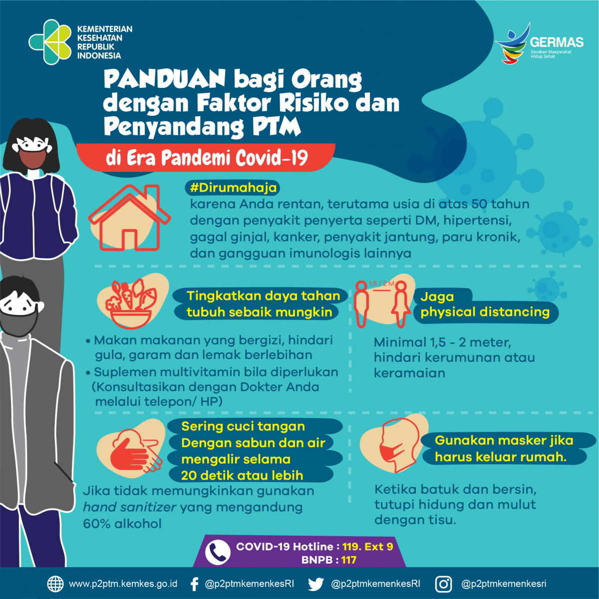

- Virus corona:
Panduan Bagi Orang dengan Faktor Risiko dan
Penyandang PTM di Era Pandemi Covid-19

Virus corona:Panduan Bagi Orang dengan Faktor Risiko dan Penyandang PTM di Era Pandemi Covid-19
Senin, 02 November 2020
• #Dirumahaja karena Anda rentan, terutama usia di atas 50 tahun dengan penyakit penyerta seperti DM, hipertensi, gagal ginjal, kanker, penyakit jantung, paru kronik, dan gangguan imunologis lainnya
• Tingkatkan daya tahan tubuh sebaik mungkin
• Makan makanan yang bergizi, hindari gula, garam dan lemak berlebihan
• Suplemen multivitamin bila diperlukan (Konsultasikan dengan Dokter Anda melalui telepon/ HP)
• Jaga physical distancing minimal 1,5 - 2 meter, hindari kerumunan ataukeramaian
• Sering cuci tangan Dengan sabun dan air mengalir selama 20 detik atau lebih. Jika tidak memungkinkan gunakan hand sanitizer yang
mengandung 60% alkohol
• Gunakan masker jika harus keluar rumah. Ketika batuk dan bersin, tutupi hidung dan mulut dengan tisu.